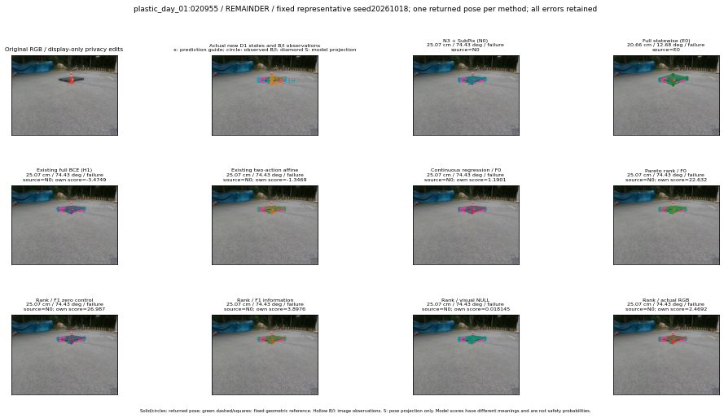

실선은 반환 자세, 초록 점선은 고정 기하 참조입니다. S는 영상 관측이 아닙니다. 점수는 모델별 의미가 다르며 보정된 안전 확률이 아닙니다. 개인정보 처리는 표시 사본에만 적용했습니다.
| 방법·seed | 위치 / 회전 / 공동성공 | 실제 출처 | 선택 후보 | 각 모델 자체 점수 |
|---|---|---|---|---|
| N0 | 25.07 cm / 74.43 deg / failure | N0 | N/A | N/A |
| E0 | 20.66 cm / 12.68 deg / failure | E0 | N/A | N/A |
| E0_REGENERATED | 20.66 cm / 12.68 deg / failure | E0 | E0_REGENERATED | N/A |
| POSEFIX_SUBPIX_PF_ANCHOR | 26.39 cm / 74.24 deg / failure | OTHER | N/A | N/A |
| POSEFIX_SUBPIX_YOLO_ANCHOR | 24 cm / 74.21 deg / failure | OTHER | N/A | N/A |
| D1_H1_MLP_s20261018 | 25.07 cm / 74.43 deg / failure | N0 | N0 | -3.4748780727386475 |
| D1_H1_MLP_s20261019 | 25.07 cm / 74.43 deg / failure | N0 | N0 | -3.4781064987182617 |
| D1_H1_MLP_s20261020 | 25.07 cm / 74.43 deg / failure | N0 | N0 | -3.0989179611206055 |
| D1_H1_PAIR_MLP_s20261018 | 25.07 cm / 74.43 deg / failure | N0 | N0 | -2.7709779739379883 |
| D1_H1_PAIR_MLP_s20261019 | 25.07 cm / 74.43 deg / failure | N0 | N0 | -2.6221089363098145 |
| D1_H1_PAIR_MLP_s20261020 | 25.07 cm / 74.43 deg / failure | N0 | N0 | -3.5826377868652344 |
| D1_H1_PAIR_ROLE_AFFINE_s20261018 | 25.07 cm / 74.43 deg / failure | N0 | N0 | -1.3469334840774536 |
| D1_H1_PAIR_ROLE_AFFINE_s20261019 | 25.07 cm / 74.43 deg / failure | N0 | N0 | -1.7502930164337158 |
| D1_H1_PAIR_ROLE_AFFINE_s20261020 | 25.07 cm / 74.43 deg / failure | N0 | N0 | -1.4959466457366943 |
| R_CONT_F0_s20261018 | 25.07 cm / 74.43 deg / failure | N0 | N0 | 1.1901174783706665 |
| R_CONT_F0_s20261019 | 25.07 cm / 74.43 deg / failure | N0 | N0 | 1.3870786428451538 |
| R_CONT_F0_s20261020 | 25.07 cm / 74.43 deg / failure | N0 | N0 | 1.320390224456787 |
| R_ORDER_F0_s20261018 | 25.07 cm / 74.43 deg / failure | N0 | N0 | 22.632184982299805 |
| R_ORDER_F0_s20261019 | 25.07 cm / 74.43 deg / failure | N0 | N0 | 16.773971557617188 |
| R_ORDER_F0_s20261020 | 25.07 cm / 74.43 deg / failure | N0 | N0 | -13.713509559631348 |
| R_ORDER_F1_ZERO_s20261018 | 25.07 cm / 74.43 deg / failure | N0 | N0 | 26.986530303955078 |
| R_ORDER_F1_ZERO_s20261019 | 25.07 cm / 74.43 deg / failure | N0 | N0 | 30.552770614624023 |
| R_ORDER_F1_ZERO_s20261020 | 25.07 cm / 74.43 deg / failure | N0 | N0 | 17.91950035095215 |
| R_ORDER_F1_s20261018 | 25.07 cm / 74.43 deg / failure | N0 | N0 | 3.8975582122802734 |
| R_ORDER_F1_s20261019 | 25.07 cm / 74.43 deg / failure | N0 | N0 | 4.170283794403076 |
| R_ORDER_F1_s20261020 | 25.07 cm / 74.43 deg / failure | N0 | N0 | -0.6877763271331787 |
| V_ORDER_NULL_s20261018 | 25.07 cm / 74.43 deg / failure | N0 | N0 | 0.018145263195037842 |
| V_ORDER_NULL_s20261019 | 25.07 cm / 74.43 deg / failure | N0 | N0 | 0.5413304567337036 |
| V_ORDER_NULL_s20261020 | 25.07 cm / 74.43 deg / failure | N0 | N0 | 5.553664207458496 |
| V_ORDER_RGB_s20261018 | 25.07 cm / 74.43 deg / failure | N0 | N0 | 2.4692487716674805 |
| V_ORDER_RGB_s20261019 | 25.07 cm / 74.43 deg / failure | N0 | N0 | 0.7065703868865967 |
| V_ORDER_RGB_s20261020 | 25.07 cm / 74.43 deg / failure | N0 | N0 | -5.099884510040283 |